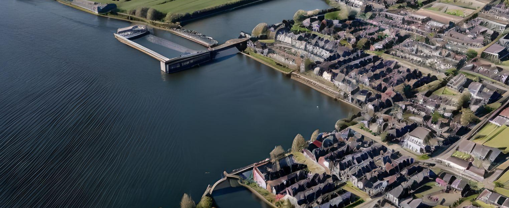

Aalsmeer's Diverse Charms
Aalsmeer, a Dutch town, boasts a history rooted in agriculture, but it is renowned for its global flower auctions. The town's beautiful canals offer great boating opportunities. For sports, football and korfball are popular. Dutch cuisine shines with dishes like herring, pea soup, and stroop-wafels. Aalsmeer's blend of history, water activities, sports, and food makes it a unique destination
